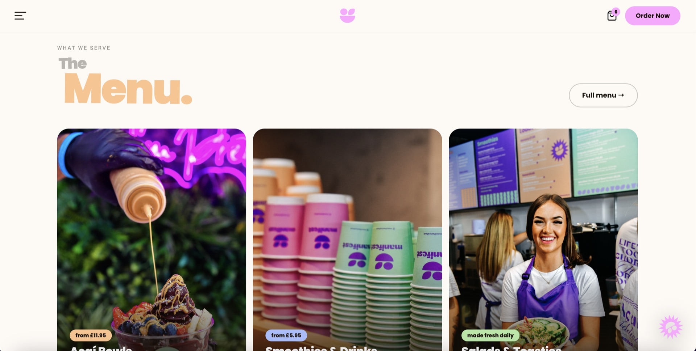

§ 01 — Website Design
Life's too short for boring bowls.
The website sells the proposition as much as the product. The hero makes the case immediately — bold, playful, confident. Scrolling deeper it explains the science: gut health, antioxidants, brain function. Built to make a health-forward brand feel desirable, not dutiful.

Built from the brand up.
Every typographic decision on the site mirrors the print work — Space Grotesk for the confident, wide-set headlines; Instrument Serif italic for warmth. No web-safe defaults, no template shortcuts.
The menu section uses a card grid that rotates product categories without cluttering the screen. The science story scrolls as a slow editorial sequence — one claim at a time, backed by illustration, never a bullet list.
- TypographySpace Grotesk · Instrument Serif
- PaletteAubergine · Chartreuse · Powder
- BuildCustom HTML/CSS · No template
- Livemanifestcafe.co.uk


Fig. 01 — Hero, menu & science story
manifestcafe.co.uk